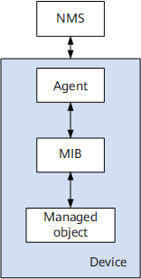

网络拓扑自动发现的方法
作为网络管理员，了解整个单位的网络拓扑结构，是保障和维护网络的基础。通常可以通过手动绘制的方式获得网络拓扑结构，但这种方法效率低，不精确，无法实时更新，因此需要一种网络拓扑自动发现的方法。下面记录一些与网络拓扑自动发现相关的方法与技术。
SNMP
SNMP是广泛应用于TCP/IP网络的网络管理标准协议，该协议能够支持网络管理系统，用以监测连接到网络上的设备是否有任何引起管理上关注的情况。
SNMP基本组件包括网络管理系统NMS（Network Management System）、代理进程（Agent）、被管对象（Managed Object）和管理信息库MIB（Management Information Base）。

Nmap
Nmap（网络映射器）是一款用于网络发现和安全审计的网络安全工具。Nmap可以检测目标主机是否在线、端口开放情况、侦测运行的服务类型及版本信息、侦测操作系统与设备类型等信息。 它是网络管理员必用的软件之一，用以评估网络系统安全。
Traceroute
Traceroute命令是TCP/IP家族内另一个比较早的工具，它可用来发现测试点 和目标主机之间的路由器。路由器在转发包之前总是将其TTL值减1，如果TTL降为0，则路由器向源地址发送TTL-Expired ICMP消息。
Ping
Ping命令是IP网上最古老的一种工具，用来监测网络节点是否活着，或用于监测到网络节点间的往返时延（RTT）。通常Ping只涉及网络上的源和目的两节点，而忽略网络细节。另外我们可以使用广播 Ping，其Ping的地址不是一个单一的地址，而是子网的广播地址，所有位于该子网的主机均对此Ping包进行响应，从而一次就可得到子网内的全部活动主机。
参考链接
- 一种网络拓扑自动获取的方法,by 马黎黎,梁鹏飞.
- 什么是SNMP？,by huawei.
- Nmap,by wikipedia.